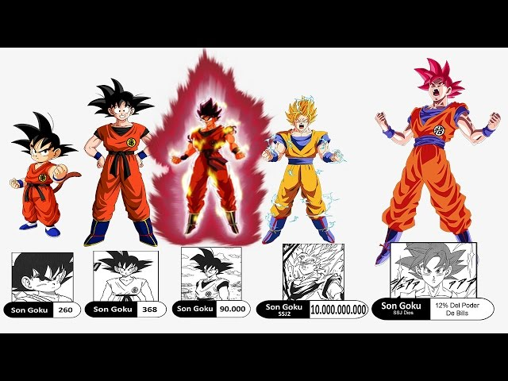

Transformações
Desde o Super Saiyajin até o Ultra Instinct, Goku evoluiu além da imaginação. Cada forma representa uma nova etapa de superação, onde o poder, a velocidade e a energia espiritual atingem níveis divinos.
A energia suprema do Saiyajin

Goku alcançou um estado de poder incomparável conhecido como Ultra Instinct. Neste modo, ele transcende os limites da consciência e permite que seu corpo reaja sozinho aos ataques inimigos — uma forma pura de combate e equilíbrio absoluto entre mente e corpo.
Desde o Super Saiyajin até o Ultra Instinct, Goku evoluiu além da imaginação. Cada forma representa uma nova etapa de superação, onde o poder, a velocidade e a energia espiritual atingem níveis divinos.
Entre seus ataques mais icônicos estão o Kamehameha, o Genki Dama e o Instant Transmission. No Ultra Instinct, cada movimento de Goku é perfeito, imprevisível e devastador.



O primeiro mestre de Goku. O lendário "Tartaruga Genial" ensinou as bases das artes marciais e o famoso Kamehameha.
O mestre sagrado da Torre Karin treinou Goku para aumentar sua velocidade, reflexos e domínio do Ki.
Após morrer na batalha contra Raditz, Goku treinou com o Kaioh do Norte e aprendeu técnicas como Kaioken e Genki-Dama.
Um dos seres mais poderosos do universo. Whis ensinou Goku a lutar sem pensar, utilizando instintos puros — o caminho para o Ultra Instinto.
Son Goku é um dos personagens mais icônicos dos animes. Conhecido por seu coração puro, determinação infinita e busca constante por superar seus limites, ele é o principal protagonista de Dragon Ball.
Goku nasceu no planeta Vegeta como Kakarotto, um Saiyajin. Ainda bebê, foi enviado à Terra, onde cresceu e se tornou um herói.
Ao longo de suas batalhas, Goku conquistou várias formas: Super Saiyajin, Super Saiyajin Blue, Ultra Instinto e muitas outras.
Apesar de ser um dos mais fortes de todos os universos, Goku é humilde, ama treinar e sempre busca proteger aqueles que ama.